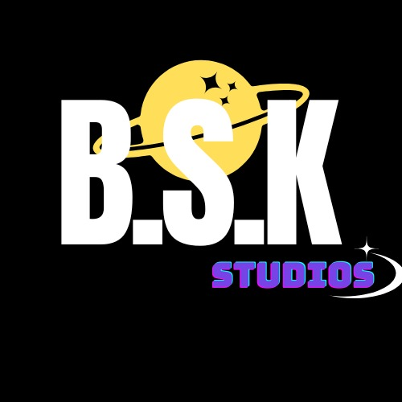

Diversão
para toda família
Personagens
Animados
O jogo
Feito pra você
A B.S.K é uma empresa de jogos 2D voltada para todas as idades. Com jogabilidade simples e temas divertidos, ela aposta na acessibilidade e na diversão para crianças e adultos.


para toda família
Animados
Feito pra você
A B.S.K é uma empresa de jogos 2D voltada para todas as idades. Com jogabilidade simples e temas divertidos, ela aposta na acessibilidade e na diversão para crianças e adultos.